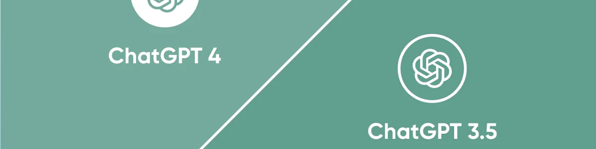
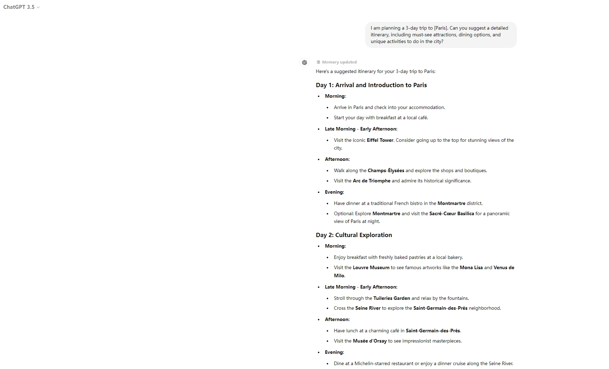
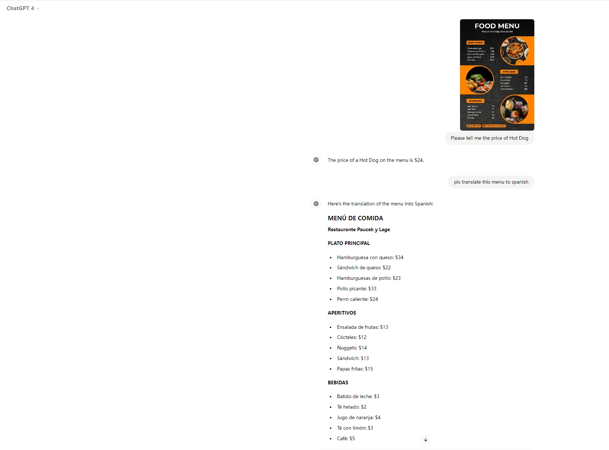
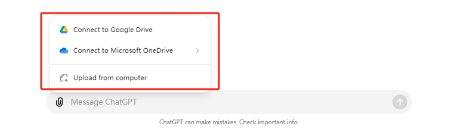
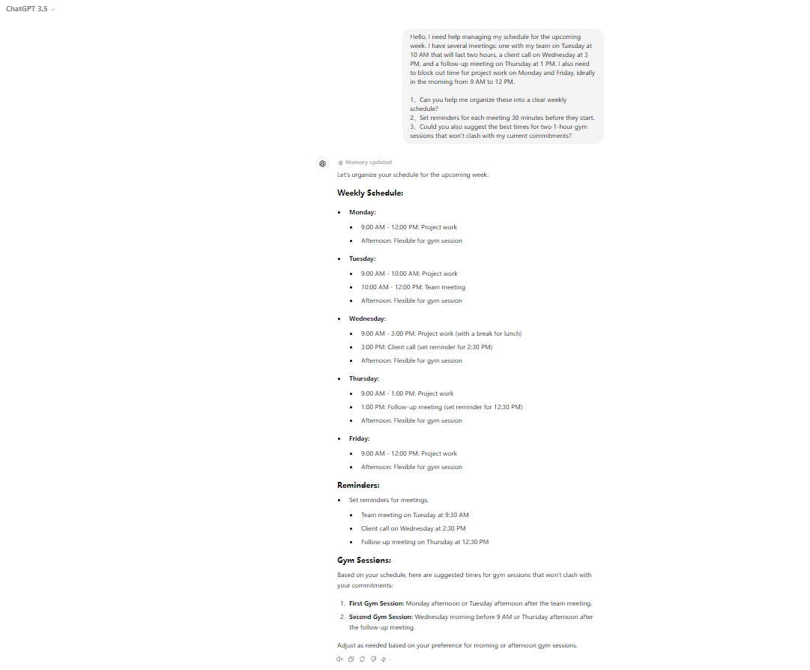
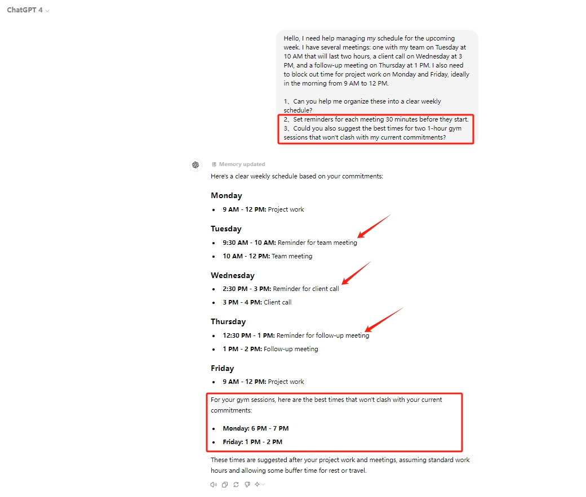
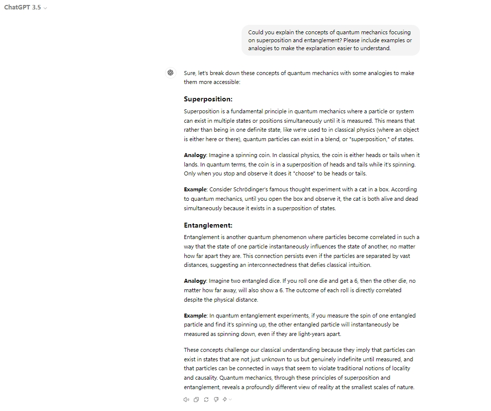
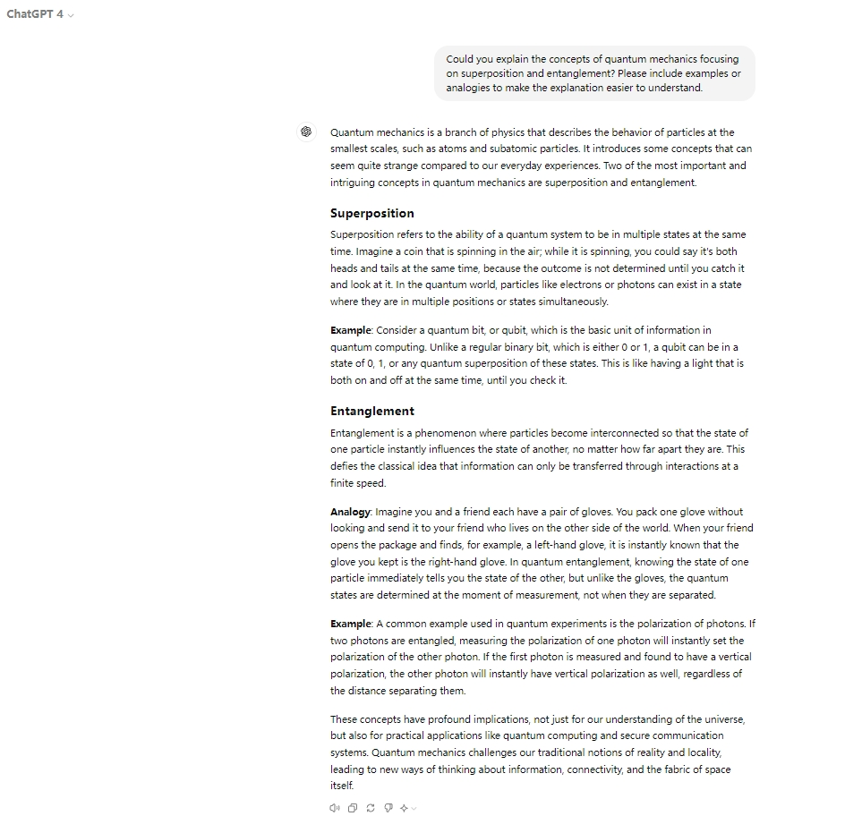
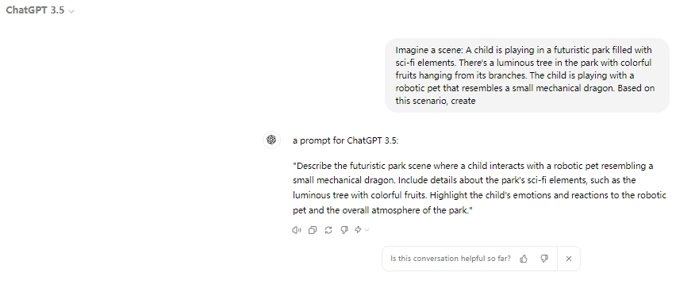
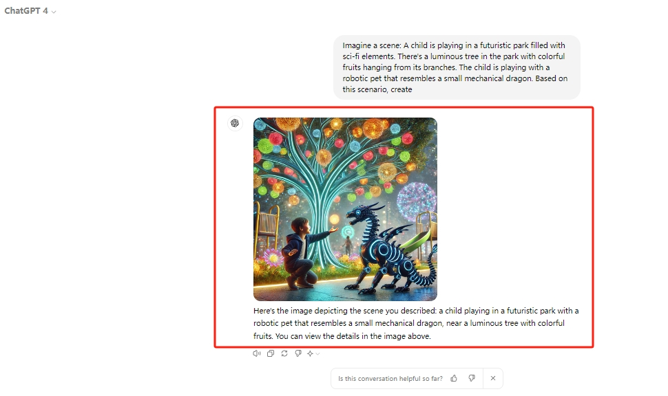

ChatGPT 3.5 與 4：有何區別
人工智能 (AI) 聊天機器人已成爲我們日常生活中不可或缺的一部分，增強了我們與科技的互動。從客戶服務到個人助理，像 ChatGPT 這樣的 AI 聊天機器人簡化了我們的數字互動。隨着 ChatGPT 3.5 和 ChatGPT 4 的發布，了解它們之間的差異對於非技術用戶來說非常有價值。
ChatGPT 3.5 與 4 相比，在功能和性能方面均有顯著提升。ChatGPT 3.5 樹立了行業標杆，而 ChatGPT 4 則提升了語言理解、上下文記憶和響應準確性。這些增強功能意味着更直觀、更可靠的交互，因此了解哪個版本最適合你的需求至關重要。
在此博客中，我們將探討 ChatGPT 3.5 和 4 之間的主要區別 ，重點介紹它們的獨特功能和用例，以幫助你做出明智的決定。
什麼是 ChatGPT 3.5？
ChatGPT 3.5 是由 OpenAI 開發的一款先進的 AI 聊天機器人，旨在促進與用戶進行自然語言對話。它在先前版本的基礎上進行了改進，以提供更連貫、更符合語境的響應。對於日常用戶而言，ChatGPT 3.5 在文本生成、日常對話和問答等任務方面表現出色。它能夠生成類似人類的文本，使其成爲各種應用的寶貴工具。
ChatGPT 3.5 的主要功能之一是其強大的文本生成能力。 無論你是在起草電子郵件、撰寫故事還是尋求家庭作業幫助，ChatGPT 3.5 都能提供結構良好且相關的內容，助你一臂之力。此外，它 在日常對話中也表現出色 ，對於那些希望以對話方式聊天或尋求信息的人來說，它無疑是一個實用的伴侶。
例如，如果你正在計劃旅行並需要有關目的地或活動的建議，ChatGPT 3.5 可以提供有見地的建議。
它在處理日常任務方面的多功能性使其成爲用戶尋求幫助而又無需深入研究複雜功能不可或缺的工具。
什麼是 ChatGPT 4？
ChatGPT 4 代表了人工智能聊天機器人技術的重大進步。此版本在 ChatGPT 3.5 的基礎上引入了多項增強功能，使其更加強大且用戶友好。 其中最顯著的改進之一是其先進的自然語言處理功能 ，這使得響應準確性更高，對話也更加自然。此外， ChatGPT 4 支持多模式輸入 ，這意味着它可以處理和理解文本和圖像。
ChatGPT 4 理解和討論圖像的能力是一大飛躍。例如，用戶可以上傳不同語言的菜單圖片，ChatGPT 4 可以翻譯該圖片，提供菜品信息，甚至推薦菜品。
此外， ChatGPT 4 支持從本地存儲、Google Drive 和 Microsoft OneDrive 上傳文件， 使用戶能夠根據上傳文件的內容獲得摘要、分析或寫作幫助。
其他增強功能包括 改進的上下文保留功能 ，使 ChatGPT 4 能夠更有效地維持對話線索，使交互更加流暢、連貫。這些功能對於參與多輪對話、教育目的、客戶支持和個人協助任務的用戶尤其有益。
ChatGPT 3.5 和 4 有什麼區別？
比較 ChatGPT 3.5 和 4 時，可以發現幾個關鍵差異。
提高響應精度
ChatGPT 3.5 與 ChatGPT 4 之間的顯著區別之一是響應準確性的提升。ChatGPT 4 在爲用戶查詢提供正確且相關的答案方面表現顯著提升。對於依賴準確信息進行決策或學習的用戶來說，這一改進至關重要。
增強自然對話流程
ChatGPT 4 能夠更有效地處理語言，從而實現更流暢、更自然的對話。這使得與 AI 的互動不再像機器人一樣機械，而更像是與真人對話，從而提升了用戶滿意度和參與度。
多模式能力
與 ChatGPT 3.5 不同，ChatGPT 4 支持多模態輸入，使其能夠理解並響應文本和圖像。此功能對於翻譯圖像中的文本或討論照片內容等任務尤其有用，可提供更豐富、更具互動性的用戶體驗。
文件上傳支持
ChatGPT 4 擴展了其實用性，支持從本地存儲、Google Drive 和 Microsoft OneDrive 等各種來源上傳文件。此功能使用戶能夠直接通過 AI 獲得文檔和其他數字內容的幫助，使其成爲一個功能更豐富的個人和專業工具。
卓越的上下文保留
ChatGPT 4 顯著增強了對話上下文保持能力。這項改進使 AI 能夠跟蹤多輪對話，從而提供更連貫、更符合語境的回應。此功能在冗長的討論或返回先前話題時尤其有用。
這些增強功能使得 ChatGPT 4 相比 ChatGPT 3.5 而言更加複雜、用戶友好，爲用戶提供更加動態、令人滿意的交互體驗。
用例：ChatGPT 3.5 與 4
ChatGPT 4 在各種實際場景中比 ChatGPT 3.5 有了顯著改進，使其在日常任務中更加靈活高效。例如：
| 特徵 | ChatGPT 3.5 | 聊天GPT 4 |
|---|---|---|
| 個人協助 | 基本日程安排、簡單提醒 | 高級調度、情境理解 |
| 學習 | 基本解釋、簡單查詢 | 詳細解釋，多模式支持 |
| 娛樂 | 基於文本的內容生成 | 多媒體理解，增強創意內容 |
如需個人協助，
ChatGPT 3.5： 可以管理日程安排和設置提醒，但可能難以處理複雜的查詢或在長時間對話中保持上下文。
ChatGPT 4： 輕鬆處理複雜的調度任務，在長時間的對話中保持上下文，並提供更準確和相關的信息。
在學習方面，
ChatGPT 3.5： 提供基本解釋並可幫助解決簡單的家庭作業查詢。
ChatGPT 4： 提供詳細的解釋，可以處理複雜的主題，支持多模式輸入，並對上傳的文檔提供全面的反饋。
爲了娛樂，
ChatGPT 3.5： 生成基於文本的創意內容，但缺乏與多媒體互動的能力。
ChatGPT 4： 生成更複雜的創意內容，理解和分析圖像和視頻，提供更豐富的多媒體體驗。
這些改進凸顯了 ChatGPT 4 如何在各種應用程序中提供更全面、更用戶友好的體驗，使其成爲在日常生活中尋求高級AI幫助的用戶的最佳選擇。
成本和可用性
ChatGPT 3.5 可通過 OpenAI 的免費套餐免費提供給用戶，用戶無需任何費用即可進行基本使用。相比之下， ChatGPT 4 主要通過 ChatGPT Plus 訂閱獲得，每月費用爲 20 美元 。
對於希望充分利用 ChatGPT 4 潛力的用戶，ChatGPT Plus 訂閱是首選。與免費套餐相比，此訂閱提供多項優勢，包括使用增強功能、更佳性能以及在高需求時段優先使用。
爲了最大限度地利用你的訂閱價值，請考慮你的使用頻率和所需的具體功能。 對於需要高級功能和持續訪問的用戶，我們強烈推薦 ChatGPT Plus 訂閱。
ChatGPT 4（Plus）值得嗎？
升級到 ChatGPT 4 的決定很大程度上取決於你的具體需求以及你如何使用聊天機器人。
對於普通用戶 ：如果你主要使用 ChatGPT 進行一些簡單的任務，例如日常對話、基本查詢或偶爾的文本生成，ChatGPT 3.5 可能仍然足夠。它提供了強大的通用體驗，無需支付最新版本的額外費用。
對於重度用戶和專業人士 ：如果你依賴 ChatGPT 來完成更複雜的任務，例如創建詳細的內容、解決複雜的問題或處理多媒體內容，那麼升級到 ChatGPT 4 將非常有益。更高的準確性、先進的語言處理能力和多模態功能使其成爲專業人士和高級用戶的寶貴工具，幫助他們獲得可靠且多功能的 AI 輔助。
對於 學生和教育工作者 ：ChatGPT 4 能夠保留上下文並提供更準確、更詳細的響應，使其成爲教育用途的絕佳選擇。無論你是用它來輔導作業、進行研究還是促進學習，ChatGPT 4 的增強功能都能顯著提升你獲得的幫助質量。
如何免費使用 ChatGPT 4？
如果你想免費試用 ChatGPT Plus，環球巴士是一個不錯的合租平臺，提供代充，鏡像網頁服務。
- 免費 GPT-4 試用 ：通過註冊 Google賬號，你可以獲得 GPT-4 的免費查詢限額，讓你無需任何初始成本即可體驗其高級功能。
- 共享 ChatGPT 4 (Plus) 訂閱 ： 環球巴士 提供賬號充值和鏡像訪問（無需註冊賬號） ChatGPT 4 服務，讓更多人能夠購買價格實惠的 ChatGPT Plus 賬戶。這使得用戶無需承擔全部經濟負擔，就能更深入、更全面地體驗 AI。
ChatGPT 4 憑藉其增強的功能和性能脫穎而出，對於那些對 AI 助手有更高要求的用戶來說，它是一款值得升級的產品。無論你是普通用戶、專業人士還是學生，使用 環球巴士，你都能以更低的成本獲得最佳的 AI 體驗。